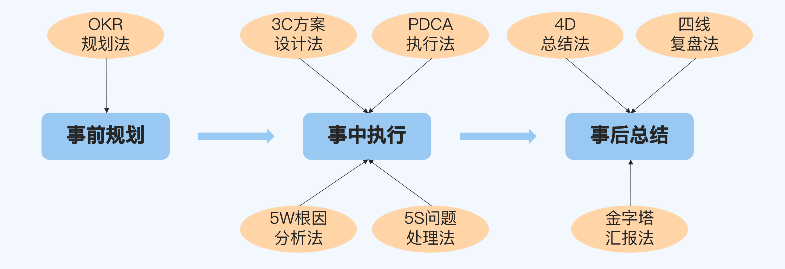

做事方法
做事能力的判断
具备闭环思维
做事的时候不能只是完成任务了事，而是要从端到端的角度去思考和落地。
端到端的过程都可以分为事前规划、事中执行和事后总结三个阶段
有方法论指导
你做事的时候不只是靠经验教训的历史积累，还有一套系统的流程或者模板。
方法论的第一个优势在于，无论遇到什么情况，你都能取得比较好的结果，能够保证交付质量的下限。否则如果只凭经验，那么下次情况稍微发生一些变化，你就不适应了。
方法论的第二个优势在于，你的行为背后是有一套逻辑支撑的，而不是拍脑袋随便拍出来的，这样会更有说服力。
能拿到好的结果
做事方法

事前规划
- OKR 规划法
英特尔提出、谷歌发扬光大的方法，通过合理地设定目标和分解关键成果来弥补 KPI 的缺陷，用于制定工作规划。
事中执行
- 3C 方案设计法
通过制定多个备选方案来系统地分析事情相关的方方面面，避免思维狭隘，用于设计合理的落地方案。 - PDCA 执行法
美国人提出、日本人发扬光大的方法，通过四个环节的循环来把控执行过程，保证具体事项高效高质地落地，用于推进事情的执行。 - 5W 根因分析法
丰田集团提出的方法，又叫“丰田五问法”，通过五个为什么来深挖问题本质，用于分析根本原因。 - 5S 问题处理法
通过五个步骤来解决问题，化“危”为“机”，用于系统地处理问题。
事后总结
- 4D 总结法
通过四个维度来整理做事的收获，能够帮助你在完成任务后进一步全方位地提升自己的能力，用于事后总结。 - 金字塔汇报法
通过遵循四个原则来展示工作成果，从而更容易获得高级别管理人员的认可，用于事后汇报。 - 四线复盘法
通过四个角度来复盘重大问题，达到公平公正的处理效果，避免背锅和甩锅，用于重大问题发生后的复盘改进。